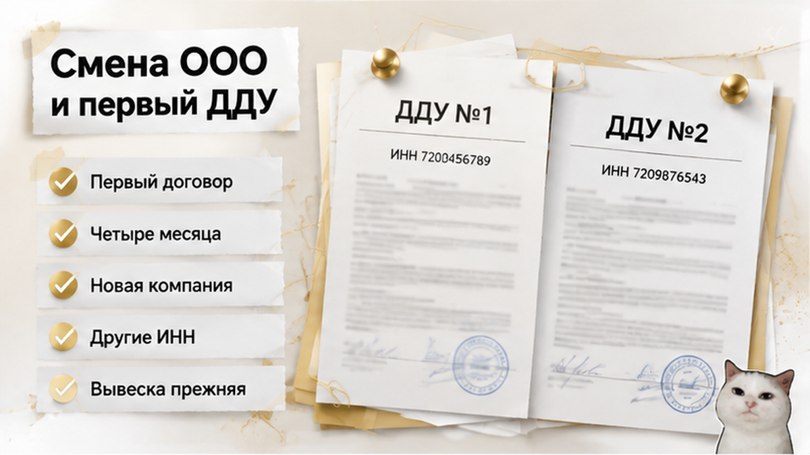

За 72 часа до конца брони семья с детьми получила в офисе продаж новый договор долевого участия на ту же квартиру в новостройке на севере Тюмени — тот же этаж, та же площадь, но другое ООО: другой ИНН, другой ОГРН, другие реквизиты счёта эскроу. «Техническая замена, подписывайте, стройка идёт по графику», — сказал менеджер и подвинул папку через стол. Банк посмотрел на те же бумаги иначе и счёт открывать не стал: деньги теперь должна получать другая компания, а её сначала надо проверить. Родители сели дома с двумя договорами и одним вопросом — подписать сегодня или ждать письменные объяснения. Они выбрали ждать, и через трое суток бронь закончилась: квартира ушла обратно в продажу, плату за бронирование вернули не полностью. Деньги на эскроу при этом не ушли и кредит не выдан — и в этом вся разница между потерянной очередью и потерянной квартирой.
Я Святослав Шакин, The Риэлтор, Тюмень. Разбираю такие сделки по документам, а не по обещаниям менеджера. Пишите в Telegram или в MAX — покажу, что смотреть в договоре до подписи.

Начиналось всё скучно и правильно. Семья выбрала квартиру в строящемся доме на севере города, подписала первый ДДУ с застройщиком — назову его ООО «А» — и получила от банка предварительное одобрение ипотеки под расчёты через эскроу. Месяцы шли обычно: дом рос, менеджер брал трубку, в чате присылали фото стройки.
Примерно через четыре месяца после первого договора у застройщика прошла реорганизация. В офисе продаж семье выдали новый ДДУ — уже от ООО «Б», с другими ИНН и ОГРН и новым счётом эскроу. Слово «техническая» звучало убедительно, потому что снаружи не изменилось ничего: вывеска та же, сайт тот же, менеджер тот же, корпус и номер квартиры те же.
Только подпись вы ставите не под вывеской. Вы подписываетесь под конкретным юридическим лицом — тем, кому обязуетесь заплатить и кто обязуется передать вам квартиру. Обычный покупатель читает шапку как формальность, а я в этом месте достаю выписку и смотрю на цифры. Другое название при тех же ИНН и ОГРН — это просто новая табличка на баннере. Другие ИНН и ОГРН — это другая сторона сделки.
Закон такую замену допускает. Статья 58 Гражданского кодекса: при слиянии, присоединении, разделении, выделении или преобразовании права и обязанности переходят к новой компании — по передаточному акту или разделительному балансу. Простыми словами: обязательства не исчезают вместе со старой печатью, они кому-то достаются.
Но «кому-то» — это не «подпишите любую бумагу, которую принесли». Пока не видно, какая именно реорганизация прошла и какими документами она подтверждена, вы не понимаете, что подписываете: замену стороны в прежнем договоре или новый договор вместо старого. Логика та же, что в истории, где семейную ипотеку на новостройку одобрили, а эскроу не открыли: одобрение банка не двигает сделку вперёд, если у сделки поменялись вводные.
Дальше история пошла по часам. Бронь была оформлена отдельным договором со своим сроком, и до конца оставалось около трёх суток — дедлайн конкретно этой сделки, а не общее правило для всех застройщиков города.
Семья принесла новый ДДУ в банк. Счёт не открыли: деньги должна получать другая компания, и её сначала проверяют — сведения в ЕГРЮЛ, проектную декларацию, разрешение на строительство, данные проекта в ЕИСЖС и основание, по которому новое ООО стало застройщиком именно этого дома.
Это не каприз сотрудника банка. При расчётах через эскроу (статьи 15.4–15.5 закона 214-ФЗ) счёт держит трёх участников: вы вносите деньги, банк их хранит, застройщик получает после сдачи дома. Меняется тот, кто получает, — банк обязан проверить нового и его связь с домом, а при необходимости заново провести юрлицо через свою аккредитацию.
Сроки у банков разные, и честной единой цифры «откроем за столько-то дней» не существует: любой, кто называет её в офисе продаж, называет от себя. Предварительное одобрение ипотеки тоже не броня — его давали под прежнего застройщика.
Семья попросила ответить письменно — какая реорганизация прошла, кто правопреемник, на каком основании выдан новый договор. И сказала: до ответа не подписываем.
Ответ в срок не пришёл. Банк счёт не открыл. Бронь истекла. Квартира вернулась в продажу, часть платы за бронирование не вернули — возврат считали по тексту договора бронирования, единого федерального стандарта тут нет. Обидно, спорить не буду.
Но посмотрите, где именно остановилась сделка: деньги на эскроу не внесены, кредит не выдан, новый договор не подписан. Это совсем другая точка, чем в истории, где ключи от новостройки перенесли на год, а деньги на эскроу уже лежали на счёте. Там средства заперты в чужой стройке. Здесь семья потеряла очередь на лот — и сохранила выбор.
Застройщик сменил юрлицо и прислал новый ДДУ: вы подпишете его ради той же квартиры или выйдете из сделки, даже рискуя потерять бронь?
Тут я обычно прошу отложить новый договор и открыть выписку из ЕГРЮЛ. Самая частая фраза в офисе продаж звучит так: «Компания теперь называется по-другому, это тот же застройщик». Иногда это правда, иногда нет — и разница видна в двух строках.
Название сменилось, а ИНН и ОГРН прежние — поменялась вывеска. Перед вами то же лицо с теми же обязательствами по вашему зарегистрированному ДДУ, просто новый баннер на заборе.
Другие ИНН и другой ОГРН — перед вами другая компания. И тогда главный вопрос сделки звучит иначе: чем эта компания связана с вашим домом.
Ребрендинги в Тюмени идут постоянно и сами по себе ни о чём не говорят. Про переименование «СтройМира» в ГК «Север» писал 72.ru в 2025 году — это факт рынка, а не доказательство, что в вашем договоре сменилось юрлицо. Проверяется всё не по вывеске и не по словам менеджера: наименование, ИНН, ОГРН, адрес юрлица в старом ДДУ и в новом. Две строки рядом, минута работы.
Если лицо действительно новое, начинается разговор про правопреемство. Обязательства не сгорают вместе со старой печатью — они кому-то достаются. Кому и в каком объёме, читается в документах о реорганизации, а не угадывается по логике.
И вот развилка, которую в офисе продаж проговаривают скороговоркой. Правопреемство не означает, что вы обязаны молча подписать любую новую бумагу. Оно означает, что обязательства по вашему договору кто-то должен исполнить. Признать преемника и подписать конкретный текст — два разных действия. Новая цена, новый срок передачи, новые реквизиты счёта — это отдельный разговор, а не приложение к слову «техническая».
Что я запрашиваю до подписи: выписку из ЕГРЮЛ на нового контрагента, документы о реорганизации — форма, дата, передаточный акт или разделительный баланс, — данные проекта в ЕИСЖС с проектной декларацией и разрешением на строительство, плюс текущий статус регистрации первого ДДУ. Пока эти позиции не сошлись в одну картину, подписывать нечего. Одобренная ипотека не лечит расхождение в документах — она просто ждёт, пока их приведут в порядок.
Ваш первый договор — не бумага в папке, а зарегистрированная сделка. 214-ФЗ устроен так: ДДУ проходит государственную регистрацию, и изменения в него оформляются тоже через регистрацию. Отсюда простое следствие: новую редакцию нельзя считать «технической копией» первой, пока вы не сверили пять вещей — кто застройщик, какой объект, какая цена, какой срок передачи, какой счёт эскроу. Строки не совпали — перед вами не копия, а другой договор.
Схем оформления тоже больше одной. Поменялись только реквизиты — обычно хватает дополнительного соглашения. Меняется сторона договора — возможны допсоглашение о замене стороны либо прекращение старого договора и заключение нового. Что применимо у вас, зависит от формы реорганизации и документов, а не от того, какой шаблон быстрее печатается в офисе продаж.
Я не утверждаю, что любой новый ДДУ незаконен. Но и обратное неправда: реорганизация не снимает обязанностей, которые уже возникли по первому договору.
Теперь про банк — самое медленное звено этой истории. Когда получатель денег на эскроу меняется, банк не переписывает название в шапке: он проверяет нового бенефициара и основание, по которому тот связан с домом. На время проверки открытие счёта могут поставить на паузу. Дальше вторая очередь ожидания: новому ООО может потребоваться аккредитация. Универсального срока нет, и честного числа вам никто не назовёт — я тоже не назову.
Предварительное одобрение ипотеки — не броня. Оно выдавалось под прежние вводные, а условия привязаны и к объекту, и к контрагенту. Похожий тупик я разбирал там, где семейную ипотеку одобрили, а эскроу так и не открыли: стопор был другой, а ощущение у покупателя одинаковое — «деньги есть, а сделки нет».
И самое практичное. Задержка из-за проверки нового контрагента — это разговор о вине по статье 401 ГК РФ, а не автоматически ваша просрочка. Право застройщика на односторонний отказ при неоплате дольше двух месяцев в законе есть. Применимо ли оно, когда платить физически некуда, потому что счёт на нового бенефициара ещё не открыт, решают конкретный договор и переписка.
Поэтому клиентам я говорю одну фразу: вы вправе не подписывать до письменных разъяснений, и отказ подписать сегодня — это не согласие на новые условия завтра.
«Всё то же самое, только шапка другая» — фраза, под которую в Тюмени подписывают больше всего лишних бумаг. Не спорьте с менеджером и не подписывайте. Попросите распечатку первого ДДУ и положите два договора рядом: двадцать минут механической работы, строка к строке. Стоит она дороже любой консультации голосом.
| Строка договора | Что в первом ДДУ | Что должно совпасть в новом | Если не сходится |
|---|---|---|---|
| Название, ИНН, ОГРН юрлица | Ваш исходный контрагент | Те же ИНН и ОГРН либо документы о реорганизации | Другие ИНН и ОГРН без бумаг — перед вами чужая компания |
| Объект: адрес, номер квартиры, площадь, этаж | То, что вы выбирали | Совпадение до квадратного метра | Сдвинулись площадь или номер — это уже другой лот |
| Цена и порядок оплаты | Сумма, одобренная банком | Та же цифра и та же схема | Цена выросла — одобрение пересматривают заново |
| Срок передачи ключей | Квартал и год из первого договора | Прежний срок либо письменное объяснение переноса | Срок «уехал» тихо — повод не подписывать сегодня |
| Банк-эскроу-агент и реквизиты | Банк, с которым шли в сделку | Подтверждение, что счёт открывают на нового бенефициара | Реквизиты есть, согласования банка нет — деньги вносить некуда |
| Проектная декларация, разрешение | Данные проекта в ЕИСЖС на дату брони | Тот же проект, обновлённые сведения о застройщике | В системе прежнее юрлицо, в договоре новое — цепочка не замкнута |
Дальше два письма, короткие. Застройщику: какая реорганизация и когда, кто правопреемник, на каком основании появился новый ДДУ, есть ли у нового ООО аккредитация в вашем банке. Банку: какие расхождения поставили открытие эскроу на паузу и что должно поступить, чтобы её снять.
Ответы просите в переписке, а не голосом в трубку. Пока деньги не внесены, переписка — единственное, что показывает, кто тянул время. В истории с распиской всё сломалось именно потому, что платёж ушёл раньше документов. Здесь порядок обратный — и это ваше преимущество.
Разбираю такие сверки по конкретным договорам — приносите свой в личку, посмотрим строки вместе.
Telegram: @Tyumen_Rieltor · MAX: Святослав Шакин, The Риэлтор
Обязательства старого застройщика при реорганизации не испаряются вместе с печатью — по статье 58 ГК РФ они переходят к правопреемнику. Но это не команда покупателю молча подписать бумагу, которую положили на стол. Зарегистрированный ДДУ меняется тоже через регистрацию: где-то хватает допсоглашения, где-то оформляют замену стороны, где-то — новый договор вместо прежнего. Что применимо у вас, зависит от формы реорганизации и документов, а не от того, какой шаблон быстрее печатается в офисе продаж.
Со счётом эскроу история похожая: меняется бенефициар — банк проверяет нового получателя денег заново, и на время проверки открытие может встать. Честного числа «откроем за столько-то дней» вам никто не назовёт. Предварительное одобрение ипотеки тоже не броня: его пересматривают, а новому ООО может понадобиться отдельная аккредитация. Похожий тупик — одобренная ипотека против строки в документах: одобрение просто ждёт, пока бумаги приведут в порядок.
Про просрочку коротко. Право застройщика на односторонний отказ при задержке платежа в законе есть. Но применимо ли оно, когда платить физически некуда, решается по конкретному договору и переписке: вина разбирается по статье 401 ГК РФ, и ожидание банковской проверки автоматически виной покупателя не становится.
Бронь живёт своей жизнью, отдельно от ДДУ. Единого федерального правила возврата нет: платёж может быть авансом, а может — платой за услугу, и всё решает текст договора бронирования. Те 72 часа — срок одного конкретного договора, а не норма для города. Частичный возврат — исход одного сюжета, а не гарантия.
И главное, что стоит забрать из этой истории. Семья потеряла очередь на конкретный лот и часть платы за бронь. Обидно. Но кредит не оформлен, эскроу пуст, документы на руках — из такой точки выходят в новую сделку за пару недель.
Поэтому если вам сегодня протягивают новый договор со словами «подписывайте, бронь горит» — возьмите день. Сверьте ИНН и ОГРН, объект, цену, срок и эскроу по строкам, запросите письменные разъяснения у застройщика и у банка. Деньги вносите только после того, как счёт эскроу реально открыт на понятного вам бенефициара. Право сказать «сначала бумаги» — это ваш рабочий инструмент, а не каприз.